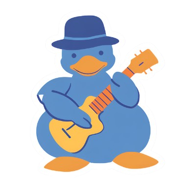

  <ion-header [translucent]="true">
    


    <ion-content class="my-custom-background" [fullscreen]="true">
      
      <link rel="preconnect" href="https://fonts.googleapis.com">
    <link rel="preconnect" href="https://fonts.gstatic.com" crossorigin>
    <link href="https://fonts.googleapis.com/css2?family=Rock+Salt&display=swap" rel="stylesheet">
    
      <ion-header collapse="condense">
        
      </ion-header>

      <div class="colored-div">
        <h1 class="musicalia">Musicalia</h1>
        <h3 class="musicalia2">O app do músico!</h3>
         
    </div>

    <ion-title class="textinho" size="large">Selecione o nível de seu conhecimento</ion-title>

    <ion-button class="voltar"  routerLink="../"> Voltar </ion-button> 

      <h2 class="a1">Acordes Maiores</h2>
      <ion-button class="rectangular-button" routerLink="/introacor"> Nivel 1</ion-button> 
      <h2 class="a2">Triades Maiores </h2>
      <ion-button class="rectangular-button2"  routerLink="/introtria"> Nível 2</ion-button>
      <h2 class="a3">Progressão C.H Maior</h2> 
      <ion-button class="rectangular-button3"  routerLink="/introprog"> Nível 3 </ion-button>
      <h2 class="a4">Notas do Braço</h2> 
      <ion-button class="rectangular-button4"  routerLink="/intronotas"> Nível 4</ion-button>


    <h3 class="nota" size="">Escolha os niveis de acordo em como 
      se avalia. As perguntas são trocadas diariamente por profissionais para que sua experiencia seja aprimorada.</h3>


      <ion-card class="introoo">
        <ion-card-header>
          <ion-card-title class="till">Por que estes temas?</ion-card-title>
        </ion-card-header>
      
        <ion-card-content>
          É válido salientar que muitas coisas na música provem da escla maior, para conhecer todas as demais intencionalidades, é interessante começar com estes assuntos fundamentais 
        </ion-card-content>
      </ion-card>
      

  </ion-content>